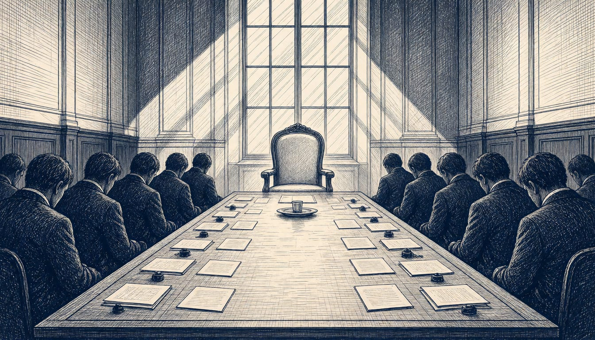

Zelenskyy gives EU until November to decide who speaks for Europe in war-end talks
Politico reports EU leaders meeting in Dublin are split among candidates for the role, while the Washington Post says Russia has resisted any European place at the table.

Volodymyr Zelenskyy urged the EU to decide quickly who will represent Europe in the negotiations on ending the war, saying that in November, not later, it must accept that choice. Steve Witkoff, President Donald Trump's envoy, said after meeting Vladimir Putin in Moscow that Europe will be at the table too. Witkoff and Jared Kushner met Putin on November 12, then saw Zelenskyy in Dublin that evening.
The split in Dublin remained unresolved on the day leaders met. At least three camps stood in the way, Politico reported. One backed European Council President António Costa, one supported Kaja Kallas, and France and Germany were reluctant to surrender their own places to Brussels. Russia had already resisted any European role in the talks, the Washington Post reported.
EU leaders received Zelenskyy at the European Political Community Summit in Dublin and reaffirmed their support for Ukraine, according to the Council. Costa and Ursula von der Leyen then stated jointly that the EU will continue its role in the Abu Dhabi talks format.
Costa set out what Europe wants from the talks: first a ceasefire, then restored navigation in the Black Sea, then the conditions for a peace agreement. His priorities, he said, are clear and unchanged. But his own assessment is blunt: so far there has been limited concrete progress towards any of the three.
Zelenskyy told reporters that European representatives would sit in the negotiating team for the next round of talks, not hold separate negotiations. Dmitry Peskov said there is no vision yet for the format in which Russia could discuss the conflict with Europe. On November 12, Putin reiterated his opposition to European peacekeepers.